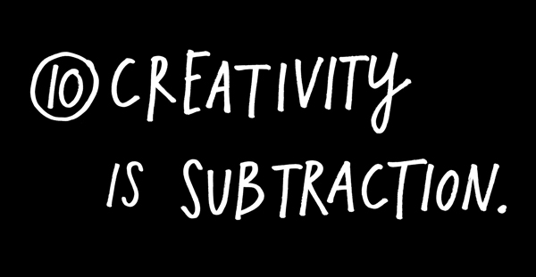
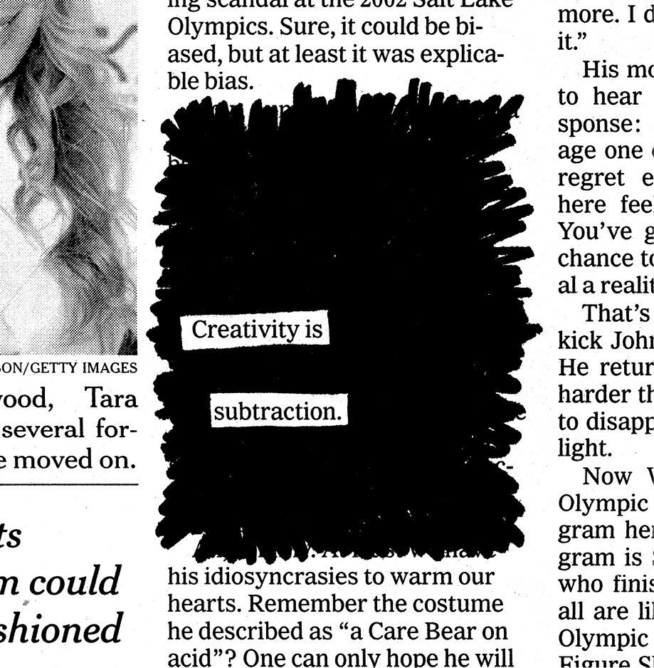
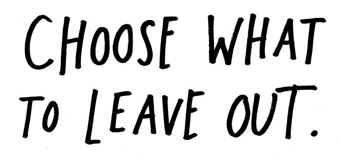
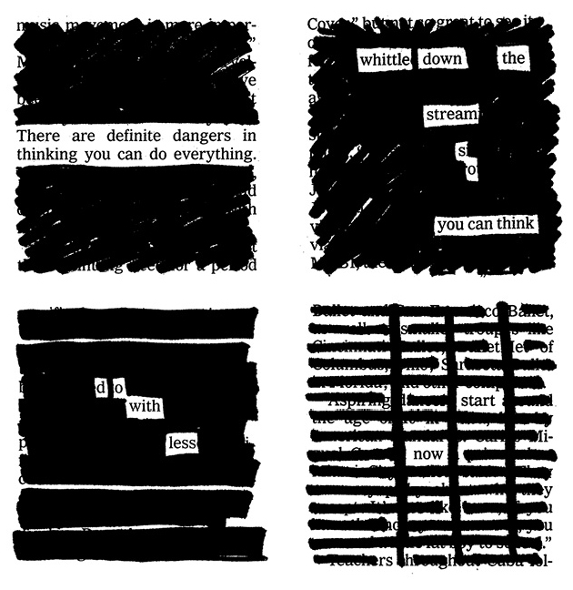

In this age of information abundance and overload, those who get ahead will be the folks who figure out what to leave out, so they can concentrate on what’s really important to them. Nothing is more paralyzing than the idea of limitless possibilities. The idea that you can do anything is absolutely terrifying.
The way to get over creative block is to simply place some constraints on yourself. It seems contradictory, but when it comes to creative work, limitations mean freedom. Write a song on your lunch break. Paint a painting with only one color. Start a business without any start-up capital. Shoot a movie with your iPhone and a few of your friends. Build a machine out of spare parts. Don’t make excuses for not working—make things with the time, space, and materials you have, right now.
The right constraints can lead to your very best work. My favorite example? Dr. Seuss wrote The Cat in the Hat with only 236 different words, so his editor bet him he couldn’t write a book with only 50 different words. Dr. Seuss came back and won the bet with Green Eggs and Ham, one of the bestselling children’s books of all time.
“Telling yourself you have all the time in the world, all the money in the world, all the colors in the palette, anything you want—that just kills creativity.”
—Jack White

The artist Saul Steinberg said, “What we respond to in any work of art is the artist’s struggle against his or her limitations.” It’s often what an artist chooses to leave out that makes the art interesting. What isn’t shown versus what is. It’s the same for people: What makes us interesting isn’t just what we’ve experienced, but also what we haven’t experienced. The same is true when you do your work: You must embrace your limitations and keep moving.
In the end, creativity isn’t just the things we choose to put in, it’s the things we choose to leave out.
Choose wisely.
And have fun.